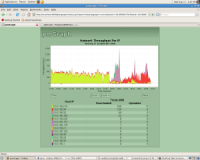

pmGraph
Bandwidth management is essential for any institutional network. In the global North, budgets for managing Internet connections are often far greater than the cost of the connection itself. In the global South, however, many institutions lack the resources for such management budgets and consequently may experience very poor network performance.

pmGraph is an application which serves graphical representations of network traffic to a web interface to assist in good management of network resources. It is intended that the program will be developed into a comprehensive and intuitive tool for monitoring networks in educational institutions.
Current Status
As the result of (by no means concluded) experimentation on how best to graphically represent network traffic, pmGraph is in the early stages of development. When installed on an appropriately placed machine, pmGraph is currently capable of displaying network throughput over time for each IP on a specified subnet, using stacked area chart and a colour coded legend. An early version is available to download and install for demonstration to developers and administrators.
Work is in progress to make pmGraph a more flexible and powerful tool. The source code is also freely available and collaborators on the project are both welcome and important for the development of the project.
Technical Details
The pmGraph project consists of three parts: pmacct (Promiscuous Mode IP Accounting Package), a MySQL database and a Java driven web front end. pmacct observes traffic passing through a Linux system configured as a network bridge and records traffic data in a database. The front end - a combination of Java Server Pages, Java Servlets and the JFreeChart libraries - serves graphical representations of this data to a web interface.
Prerequisites
pmGraph requires certain prerequisites:
- A machine running a Linux operating system with network bridging capabilities
- A MySQL database
- pmacct
- A Tomcat server
With the exception of pmacct (which only needs to be downloaded, compiled and run), a working knowledge of each of these components is necessary to continue installing and developing pmGraph. For ease of configuration, it is suggested that all of the components are installed on a single machine.
Installation Instructions
pmGraph can be downloaded here. Unpack the archive, cd into it and copy pmgraph.war into your Tomcat web apps directory.
Edit the file at {tomcatroot}/webapps/pmgraph/WEB-INF/src/database.properties so that the LocalSubnet variable is set to the subnet you will be monitoring. You may also set the address for your MySQL database here if it is not installed locally.
Configure MySQL to receive data from pmacct by runing the script in the config folder with the command
$ mysql pmacct -u root -p < config/pmacct-create-db_v6.mysql
Run pmacct with
$ sudo pmacctd < config/pmaccd.conf
The pmGraph page should now be available at
http://{yourbridgemachine}:{yourtomcatport}/pmgraph